也紀念我們永遠的朋友 李士傑先生（Shih-Chieh Ilya Li）。
開放源碼陣營的思考與企劃新利器 - XMind (1)
＊基礎認識篇＊
Attila 是個喜歡胡思亂想的人，在思考或企劃一個複雜的主題時，腦海中總是有許許多多天馬行空的想法。在思考的過程中，有些部份很快就會想好相關的細節，有些卻只有大綱，但是想到最後，到底哪些地方已經夠清楚，哪些部份還要補強，自己的腦海裡常常會變得一團亂。而在思考過程中，往往又會有許多好點子和創意電光石火般的出現，就更容易讓頭腦混亂啦！所以要是在思考的過程中，不即時且有效的紀錄起來，到最後就會喪失一些好點子和創意。
傳統的作法，不外乎採用分點大綱的方式寫下來，但這個方法的缺點是，想要一次就有順序和架構的寫好，是一件很不容易的事。萬一寫到一半，突然想到某些地方要補充或加入一些額外的內容，往往會受限於各點之間的篇幅而無法加入（不然就是因為使用插入符號而顯得雜亂無比），前後的內容在架構上是否有衝突，也不大容易看得出來，萬一第三點要改為第七點的第二項，忙著東搬西移的結果，別說是想創意啦，連整體的主題都想不齊全！
如果大家有這樣的類似經驗，那麼請考慮放棄大綱法，改用心智圖法吧！
心智圖法（Mind Mapping，也有人稱為心靈圖像思考法），是一個用來整理並紀錄自己各種創意和點子的好方法。只要利用文字、線條、幾何圖形和顏色等，在一張空白的紙上，把想要思考的中心主題寫在紙張的正中心，然後如放射線一般，以向外輻射的方式畫出線條，把一個個想到的東西寫在線條上（可用框線圈起來），如果內容多，就用相同的方法，一層一層的向外延伸，很輕鬆就能把腦海中各式各樣，看似不相干的想法串連起來，整理出一個有組織，有系統的架構圖出來，讓飄渺不定的想法，能夠以圖像的方式具體得呈現。
心智圖法的應用當然不止於此，我們也可以用來作筆記，尤其是用在跨科、跨領域時特別有用。用這個方法，很容易就能把相關的部份串連起來，絕對會比用傳統的大綱式筆記來得清楚、明白。
至於在企業應用上，用來當作創意思考、專案簡報、組織和流程圖的繪製等等，心智圖法也是相當實用又有效率的方式。
不過採用紙筆來繪製的心智圖的方式，可能還要多一點的耐心和橡皮擦才行。若改用心智圖繪製軟體，在剛開始的思考期，就更能把重點放在內容構思上，最後要進行整理時，要移動各部份的內容也非常容易，絕對能在最短的時間內，繪製出一個架構嚴謹、內容完整又清楚易懂的圖形來！
開放源碼的心智圖軟體，除了知名的 FreeMind 之外，XMind 算是一個不錯的選擇。它的主要優點是轉換架構圖的形式很容易，省去不少重新繪製的時間。此外也提供一些用來表現主題架構關係的工具，甚至是用來表示重點的簡單圖形，讓整個心智圖更加清楚易懂又活潑！
只是 XMind 有一個急待改進的缺點，那就是對於系統資源的要求略嫌太高，尤其是記憶體。開啟後還沒開始做事，就使用了近 100MB 的記憶體，開使繪製圖形時，隨著圖形的增加，記憶體也吃的越兇（畫一個只有五個子題的魚骨圖，就吃掉 500多MB 的記憶體！）。或許是因為軟體外觀上求精美，製作的圖又比較細緻所致（也有人說是因為採用跨平台 JAVA 的緣故）。所以想要選用 XMind 的朋友，Attila 建議系統的主記憶體最好有 2GB 以上。
XMind的版本差異
XMind 從 3.0 開始，提供了開放源碼的自由軟體版，並且在很短的時間內推出 3.01 版。3.01 版除了修正 bug 和增加功能之外，還多了幾個世界上主要語言的支援，如德文、日文、正體中文和簡體中文（安裝或使用時會根據作業系統預設的語系而自動選擇）。
另一個當然就是專業版啦！這得要付費才能使用完整的功能（該網站上稱為 subscription，也就是捐款，似乎想藉此降低商業色彩），而且是採用包月制的方式，使用者可根據需要，選擇一個月、半年或一年等使用期限。
兩個版本間的主要差別，在於自由軟體版以繪製心智圖的功能為主，專業版除了自由軟體版的功能之外，還多了簡報功能以及和其他軟體的整合，如匯出為 Microsoft PowerPoint 的檔案等，以便進行更多、更廣泛的應用。
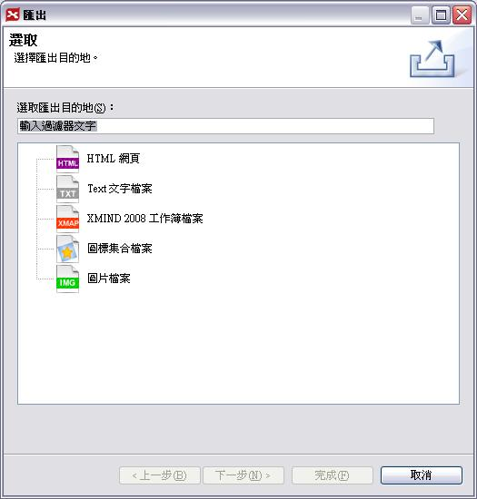
圖1：自由軟體版能匯出的檔案格式
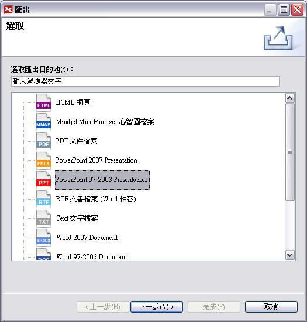
圖2：專業版能匯出的檔案格式，顯然比自由軟體版來的多
一般來說，除非有特定的商業應用需求，否則使用自由軟體版已經足夠，即使要把設計好的心智圖放到簡報檔內使用，也可以匯出成圖片來用。在本文裡，Attila 要介紹的當然是自由軟體版囉！
下載
要下載 XMind 之前，必須先註冊成會員才行。註冊過程很簡單，只需要輸入帳號（系統會驗證是否有人採用）和自建的密碼，註冊完畢後，就有自己專屬的帳戶，之後若要使用相關的服務，都是透過這個帳戶來進行。
XMind 的官方網站：https://www.xmind.net/
自由軟體版下載處：https://www.xmind.net/downloads/
付費專業版下載處：https://www.xmind.net/pro/downloads/
在這些下載頁面中，大家可以根據自己的作業系統，如 Linux、Windows、Mac 等，下載合用的版本。
除了安裝版本之外，自由版和專業版都有可攜式（portable）版本可下載。下載回來的是 Zip 壓縮檔，裡面包含 Linux、Windows、Mac 三個版本。解壓縮之後，會看到如下圖一般的內容：
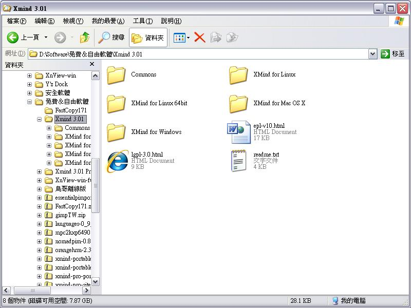
如果只想使用某一個版本（如 Windows），那麼就把其他版本的資料夾刪除掉即可（如 Mac、Linux 和 Linux 64bit），但 Commons 資料夾可千萬別刪除喔！因為這裡存放的可都是和各種功能有關的東西！
在此 Attila 給大家一個小小的建議，如果只想要先試試看好不好用，就使用可攜式版本，如此可省下安裝和移除的麻煩。要是覺得好用呢？要不要採用安裝版其實都差不多啦！
必備的基礎知識
心智圖的基本繪製方式是放射狀的，畫好之後，通常是像下面這張圖：
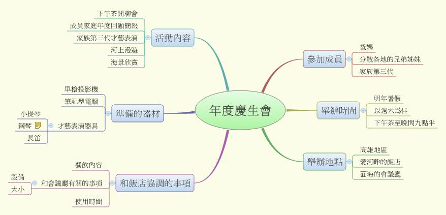
仔細觀察一下這張圖，我們會發現，其實心智圖的繪製相當自由，沒什麼特殊的技巧或法則，在繪製的過程中，只需要注意一點，那就是主題和子題之間的連結，甚至是子題之間的關聯性如何表達。其他的美化或強調方式，主要的用意是標明重點、突顯某一子題群的關係，或者是方便自己把整個內容記住。
記住內容？沒錯，心智圖的一大作用就是方便記憶。各個子題的擺放位置和子題彼此之間的關係，正是大腦用來記憶整個內容的相關線索（反過來說，想要記起某個子題時，也是回憶的線索）。當我們把內容整理好之後，只要根據思考的過程和連接出去的順序，把相關的內容閱讀過一遍，不但容易理解子題之間的關係，而且也對某一思路的前後關係、思考架構都很清楚，要記起來（或回憶）就很容易啦！
美化圖表還有一個記憶上的好處，就是可以加入自己熟悉的圖片。例如要規劃一個家庭聚會，在聯絡家庭成員那一部份，我們可以加入鬧鐘的圖，記憶的時候，就把鬧鐘和聯絡家庭成員聯想在一起，如此要記憶或記起相關人名都會比單純的文字輕鬆。當然，要在軟體上繪製或加入合適的圖標並不容易。不過別忘了，心智圖是很自由的。要是覺得繪圖太困難，改用其他方式如註解等，也同樣能達到類似的效果。
至於美化的技巧，完全看個人的喜好而定，是否受過正統的美學訓練，並非必要條件。大家可以根據自己的喜好，自由運用各種幾何圖形、配色方式、字型、字體大小、線條的粗細和種類等。唯一的原則就是：自己能懂、方便記憶就好。（當然，如果要拿來和人家溝通，最好還是要弄成別人也能懂的樣子！）
除了上述的心智圖之外，某些在實務或商業應用已經發展成熟的圖形，如樹狀圖、魚骨圖、組織圖、邏輯圖、二維表格等，XMind 也都有範本可用，若確定要採用這些圖形，一開始就能提供基本的架構，能有效提昇製作效率。在繪製過程中若想轉換，也很簡易快速。
最需要注意的是，我們應該要先瞭解各種圖形所要表達的重點和優點是什麼，繪製時才有辦法選擇適合的圖形，如此採用範本才有意義。
以魚骨圖為例，魚頭標示的是主題，魚身上半部的刺，可以用來表示正面的意見；下半部則用來表示反面的意見（是否每個意見需要對立，則視主題和製作者思考方式而定），或者根據繪製過程中，上下交替循環出現主題的特性，來製作表示交替關係的魚骨圖。
至於其他的圖形，其實都算很常見，大家望文生義或觀察一下圖形，不難瞭解其中的意義，即使要查一下相關資料也不難。這裡礙於篇幅的限制，就不一一詳述了。
啟動 XMind
如果採用的是安裝版，啟動的方法和一般的應用程式沒有什麼差別，如果是可攜式版本，就有些不同了。下圖所示就是開啟的方式：
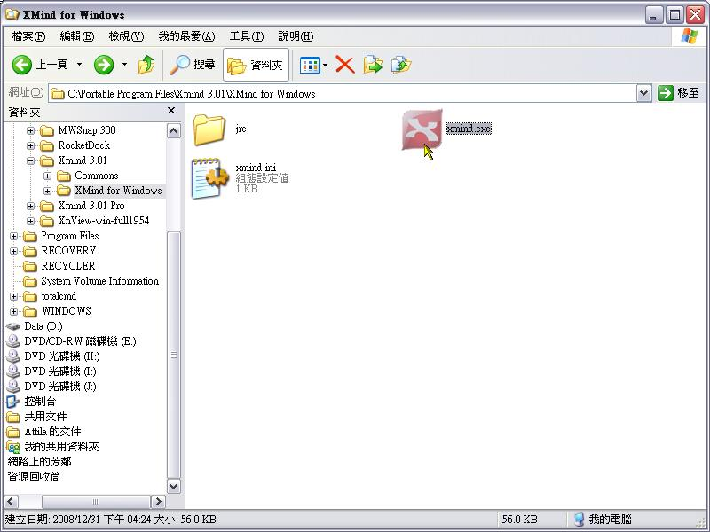
在解壓縮後的資料夾內，開啟 XMind for Windows 資料夾（此處僅以 Windows 版為例），然後在 XMind.exe 上面按二下滑鼠，就會開啟 XMind。
為了省麻煩，我們可以利用建立捷徑的方式，放在自己最習慣開啟程式的地方，如「開始」按鈕的「所有程式」內、Dock 或工作列上，以後要開啟的時候就不必這麼麻煩。
認識工作簿與頁面
XMind 所建立的檔案，是以工作簿為單位，一份工作簿內可以有很多頁（XMind 內稱為頁面），所以 XMind 可以用來建立龐大複雜的專案。也因為這個緣故，有人就用來作為簡報之用。
此外，XMind 可以同時開啟或建立多個工作簿（這裡不得不提醒大家，記憶體的消耗將因此而更兇！），一來方便參考相關內容，二來剪貼相關內容也比較容易，而且採用的是分頁的方式，切換和檢視相對簡便許多，底下就是多頁面和多工作簿的作法。
步驟一：
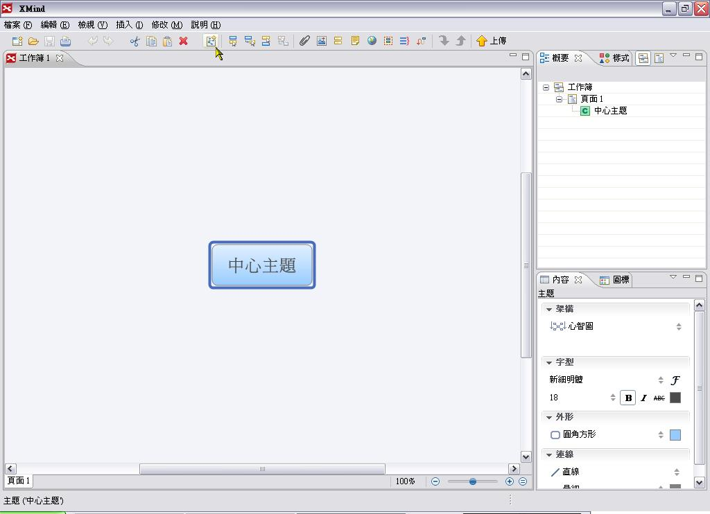開啟 XMind 之後，按一下工具列的「建立新頁面」鈕。
步驟二：
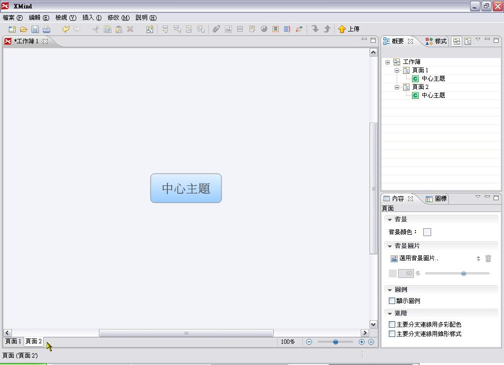
此時會建立一個新的頁面。表面上看起似乎沒什麼不同，但是左下角會看見一個「頁面2」的標籤，並且顯示目前真正編輯中的頁面是「頁面2」。
步驟三：
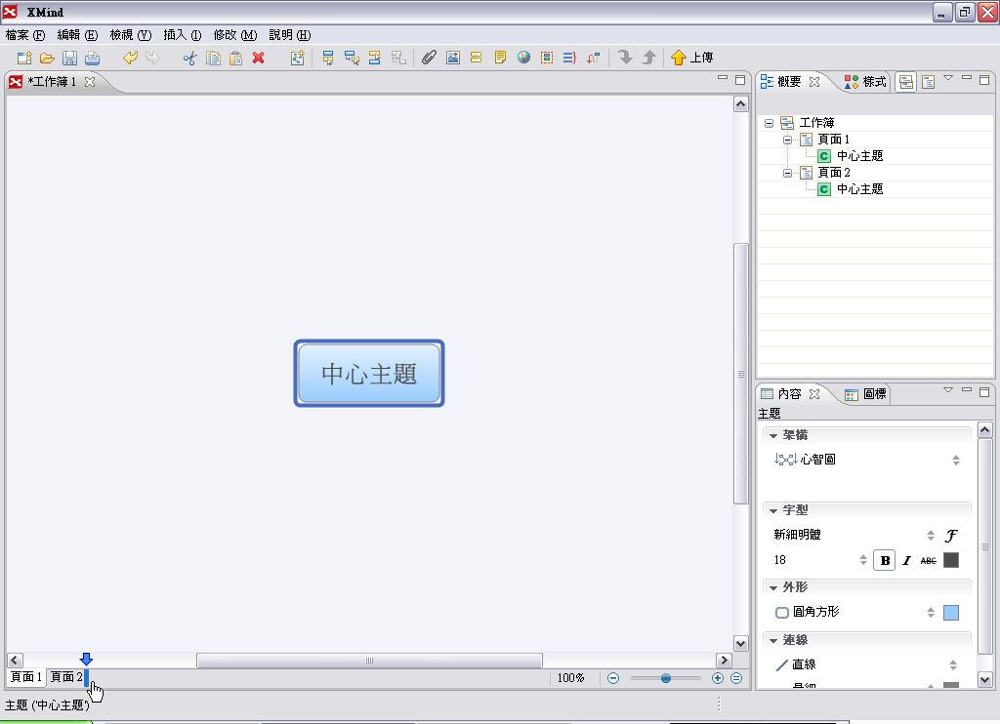
頁面之間是可以改變前後順序的，我們按住「頁面1」，然後拖曳到「頁面2」的後面。
步驟四：
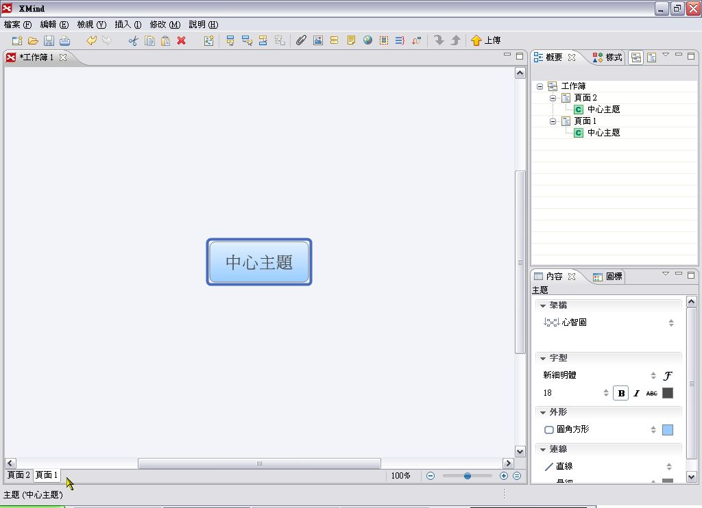
放開滑鼠後，我們就會發現原來在「頁面2」前面的「頁面1」，已經被移到「頁面2」的後面了。
步驟五：
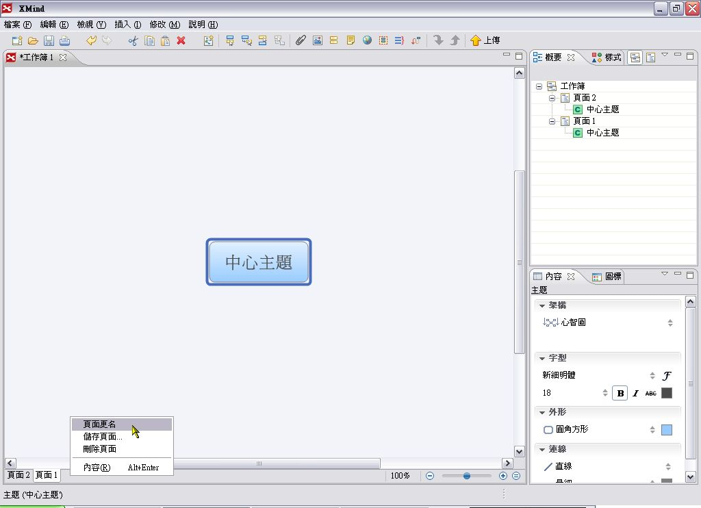
頁面本身有些部份是可以編輯的，例如更改頁面的名稱。我們在頁面上面或旁邊的空白處按一下右鍵，在出現的快顯功能表上點選「頁面更名」。
〔補充說明〕
如果在頁面標籤旁的空白處按滑鼠右鍵，所要修改的頁面是目前編輯中的頁面。
步驟六：
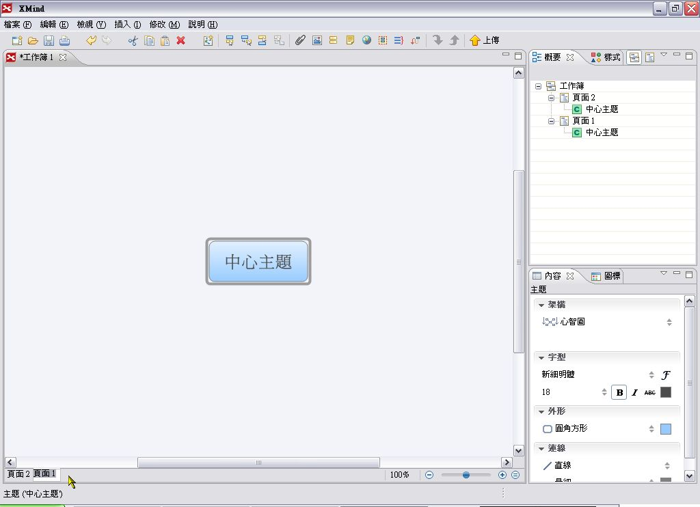
此時「頁面1」的標籤名稱為可編輯狀態，接著輸入想要的文字，然後按一下鍵盤的 Enter。
步驟七：
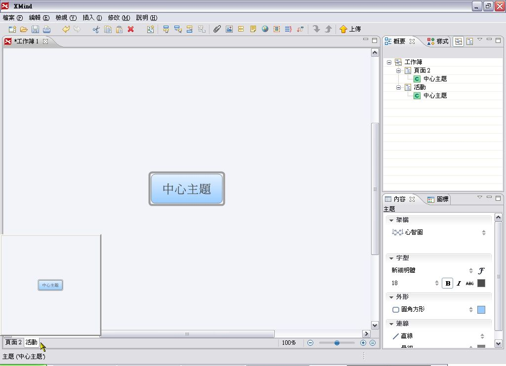
頁面標籤的名稱就改過來了。如果把滑鼠移到頁面標籤上，還會出現該頁面的內容縮圖，方便我們迅速查知該頁面的內容。
步驟八：
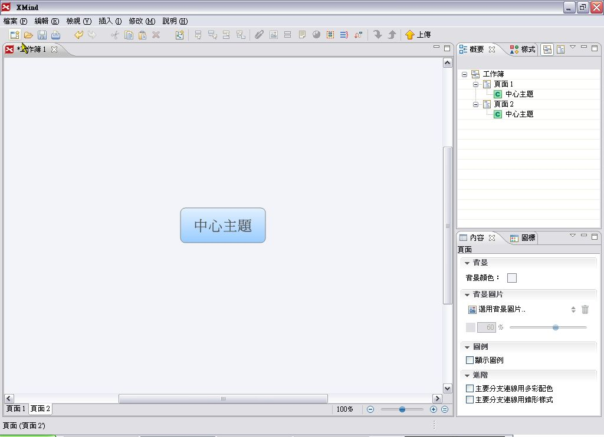
如果要新增一個工作簿，那麼就按一下工具列上的「建立新檔使用預設模板」。
步驟九：
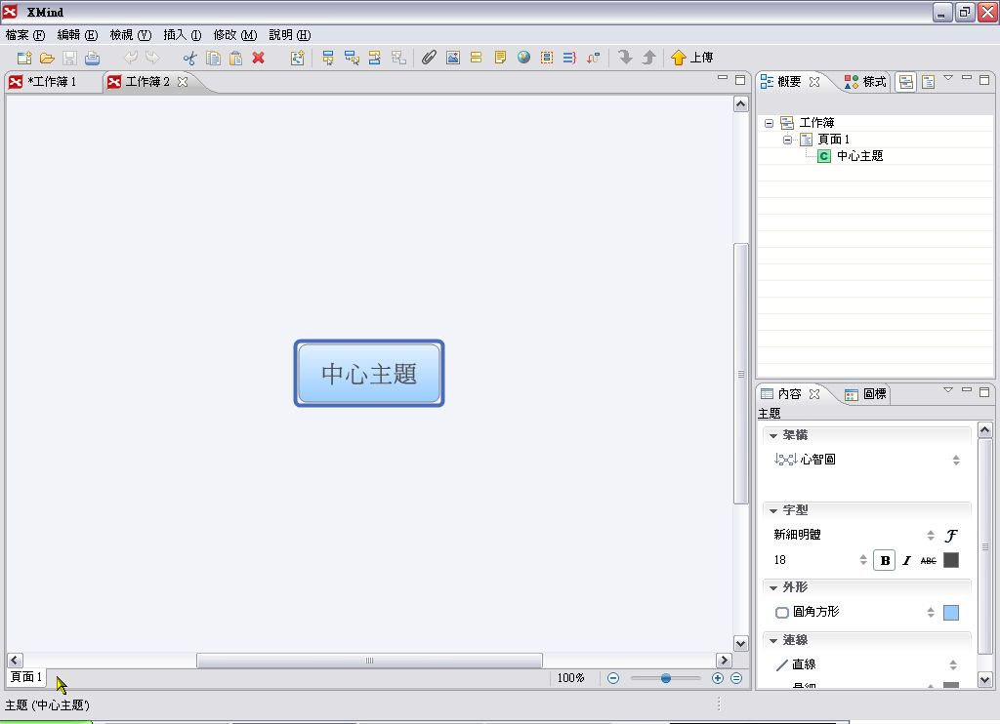
這時會以預設的模板建立一個新的工作簿，看一下左下角的頁面標籤，我們可以知道這是一個獨立的工作簿，和先前的工作簿沒有關係，只不過是同時開啟而已。
註：本篇文章將分四期刊登，下一期將介紹 Xmind 的基本製作技巧。
You may be interested in the following articles:
- 開放源碼陣營的思考與企劃新利器 - XMind (4) - 2009-04-05
- 開放源碼陣營的思考與企劃新利器 - XMind (3) - 2009-03-25
- 開放源碼陣營的思考與企劃新利器 - XMind (2) - 2009-03-14
Special


Address：No.128, Sec.2, Academia Rd., Institute of Information Science, Academia Sinica, Nangang District, Taipei City 11529, Taiwan (R.O.C).
Privacy Policy. Terms-of-use